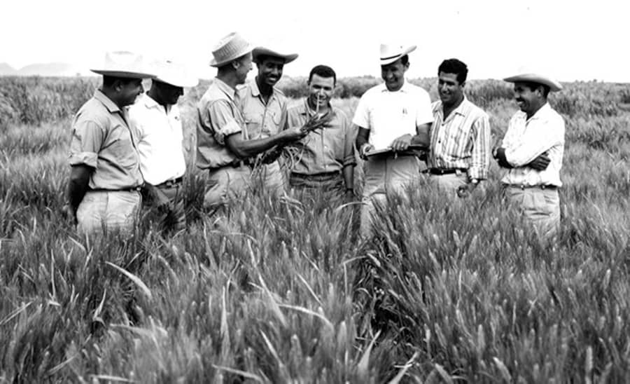

Dr Norman Borlaug
The man who saved a billion lives

Dr. Norman Borlaug , lhird from the lcft, trains biologists in Mexico on how to incrcase whcat yiclds - part of his life-long war
Here's a time line of Dr. Borlaug's life:
- 1914 - Born in Crcsco, Iowa
- 1933 - Lcavcs his family's farm to altcnd lhc Unlhanks to a Dcprcssion cra program known as"National Youth Adrninislralion"
- 1935 - Has to slop school and save up more money. Works in the Civilian Cond changed lhcm", he said. "All oft scars OC lßC.’
- 1937 - Finishcs univcrsity and takcs a job in the US Forestry Service
- 1938 - Marrics wifc of 69 ycars Margrct Gff duc fo bud under Stakman, who flaches hirn aboul brccding pcst-rcsislcnt plants.
- 1941 - Trics to cnroll in the mililary after lhc Pearl Harbor atiack, bu1 isoof gluc , DDT toisinfcctants, anApplied scicncc
- 1942 - Rcccivcs a PhD. in Gcnctics and Plant Palhology
- 1944 - Rcjccts a 100°A salary inc Icavcs bchind his prcgnant wifcat - including diffcrcnl varictics for cach major climatc on
- 1945 - Discovcrs a way fo grown whcat twicc cach season, doubling whcat yiclds
- 1953 - crosscs a shori, sturdy dwarf brccd of whcat wilh a high-jcidling Americilizcr. II goes on to pro59c of Mexico’s whcat.
- 1962 - Visits Delhi and brings his high-yiclding strains of whcat to thc Indian subcontincnt to a rapidly cxpanding population
- 1970- rcccivcs thc Nobel Pcacc Prizc
- 1983 - hclps scvcn African countries dramatically incrcasc thcir maizc and sorghurn yiclds
- 1984 - bccorncs a dislinguishcd profcssor at Tcxas A&M University
- 2005 - stalcs "we will have to doublc the world food bcng limc. Long before we callcd it scicncc, c sclccting the best brccds."
- 2009 - dies at the agc of 95.
"Borlaug's life and achicntribution that on intellect, persistence and scicntific vision can make to human peace and progress."
-- Indian Primr Minister Manmoluui Singh
If you have time, you should read more about this incredible hu Wikipedia entry.